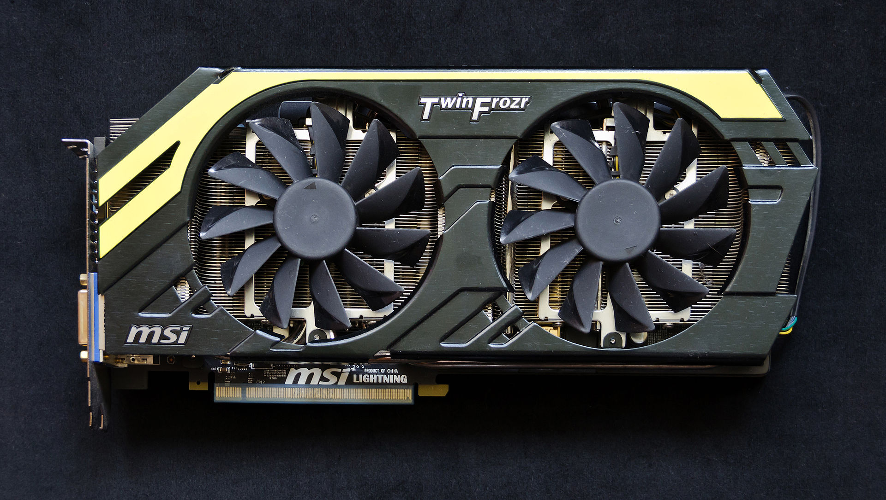

KARTA GRAFICZNA
Co to w ogóle jest ? Karta graficzna to karta rozszerzeń komputera odpowiedzialna za renderowanie grafiki i jej konwersję na sygnał zrozumiały dla wyświetlacza.
źródło: https://pl.wikipedia.org/wiki/Karta_graficzna
- Do czego dochodzą akcesoria pomagające/umożliwiające pracę z komputerem**:
* - nie wymagane ale zalecane
** - nie wymagane ale umorzliwiają korzystanie z komputera w przyjemny i łatwy sposób (najlepsze do użydku domowego)